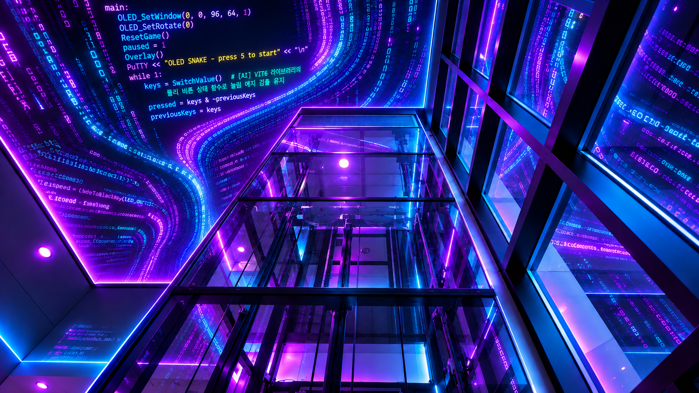

HARDWARE DOCUMENTATION
Starlit CMD Plus
7 × 7 LED Matrix로 넓어진 표현.
Starlit CMD Plus는 7 × 7 LED Display와 2개의 버튼을 갖춘 Starlit CMD 확장 보드입니다. ARM Cortex-M7 기반의 216 MHz 코어와 64 KB Code Unit으로 나만의 LED 패턴을 실행하세요.
문서 및 자료 준비 현황
7 × 7 LED Display · 2 Buttons
보드 한눈에 보기
- Core
- STM32F722RET6
- CPU / Clock
- ARM Cortex-M7 / 216 MHz
- Display / Input
- 7 × 7 LED / 2 Buttons
- Memory
- 2 MB · Maximum 32 SBCs
- Code Unit / Variable
- 64 KB / 32 KB
- IO
- LED Matrix, Switch, Serial (460800 baud)
Unpacked에 소개된 CMD Plus 사양 기준입니다. 실제 제작 사양은 기준 사양과 달라질 수 있습니다.
RESOURCE LIBRARY01 — 06
문서 & 다운로드
Starlit CMD Plus 전용 자료를 준비하고 있습니다. 회로도·Gerber·펌웨어·BOM 및 좌표 파일의 다운로드는 등록 전까지 비활성화됩니다. Block Diagram도 준비 중입니다.
- Core
- STM32F722RET6
- CPU / Clock
- ARM Cortex-M7 / 216 MHz
- Display / Input
- 7 × 7 LED / 2 Buttons
- Memory
- 2 MB · Maximum 32 SBCs
- Code Unit / Variable
- 64 KB / 32 KB
- IO
- LED Matrix, Switch, Serial (460800 baud)
사양 출처: Starlit 7 AI Unpacked · Starlit CMD Plus. 프로그램 작성은 CMD/CMD Plus 라이브러리 가이드를 참고하세요.
Starlit CMD Plus 회로도 · 준비 중
| 버전 | 등록일 | 주요 내용 / 변경 사항 | 파일 형식 | 다운로드 |
|---|---|---|---|---|
| 미정 | 미정 | CMD Plus 회로도 등록 준비 중 |
Starlit CMD Plus PCB 제작 자료 · 준비 중
| 버전 | 등록일 | 주요 내용 / 변경 사항 | 파일 형식 | 다운로드 |
|---|---|---|---|---|
| 미정 | 미정 | CMD Plus Gerber 등록 준비 중 | ZIP |
Starlit CMD Plus 펌웨어 · 준비 중
| 버전 | 등록일 | 주요 내용 / 변경 사항 | 파일 형식 | 다운로드 |
|---|---|---|---|---|
| 미정STM32F722RET6 | 미정 | CMD Plus 전용 펌웨어 등록 준비 중 | BIN |
Starlit CMD Plus 부품 목록 및 좌표 파일 · 준비 중
| 버전 | 등록일 | 주요 내용 / 변경 사항 | 파일 형식 | 다운로드 |
|---|---|---|---|---|
| 미정BOM | 미정 | CMD Plus 부품 목록 등록 준비 중 | CSV | |
| 미정Pick And Place | 미정 | CMD Plus 좌표 파일 등록 준비 중 | CSV |
Starlit CMD Plus Block도 · 준비 중
BLOCK DIAGRAM
준비 중
블록도 샘플 이미지입니다. CMD Plus의 전원 및 신호 구성도는 추후 공개됩니다.